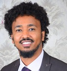

Our Organisation
What is EYU-Ethiopia?
- EYU-Ethiopia is a board-led, non-profit, non-governmental organization established to reduce the burden of avoidable blindness and ocular disability in Ethiopia through research, training and integrated community-based service delivery.
Our Vision
No one will be visually impaired or disabled from avoidable causes in Ethiopia.
Our Mission
To reduce the burden of avoidable blindness and other non-vision impairing but disabling conditions and provide support and rehabilitation services for those with low vision or blindness in Ethiopia, through research, ownership and capacity building of communities and eye care professionals, and health system integrated eye care service delivery.
Our Values
Community First: EYU-Ethiopia is established with the primary aim of serving communities in need. We put the people’s eye health first and strive and act timely to address their needs. We are here to serve. I CARE is our motto.
Excellence: Quality is at the heart of EYU-Ethiopia. We strive to deliver the highest quality service to our community guided with the best available evidence and technical expertise. We strive to continuously develop ourselves and innovate to respond to the public’s demand and a changing world.
Commitment: We are committed in heart and mind to serve communities in need and realise EYU-Ethiopia’s vision.
Integrity & Respect: We are honest, open, ethical, and fair. People trust us to adhere to our word and keep our promises. We strive to show a deep respect for people inside and outside our organisation and for the communities of which they are part. We strive to make people feel safe, respected, empowered, fairly treated and duly recognized. Building a strong, trusting relationship with the community, stakeholders, and our employees, is our purpose. We believe our employees are the backbone of our organisation. Respecting our employees means respecting their individual human rights and privacy, ensuring a safe and healthy workplace environment, and providing them a dynamic platform, where they can explore their creativity and skills and further enhance themselves.
Accountability: We are liable and responsible for decisions made and actions taken, both personally and on behalf of our organisation. EYU-Ethiopia expects its staff to achieve the highest professional standards and be transparent, resourceful, committed, trustworthy and loyal to serve communities in need of eye care services.
Diversity & Neutrality: We believe it takes people with different ideas, strengths, interests, and cultural backgrounds to succeed. We explicitly prohibit all forms of discrimination, whether based on religion, belief, race, ethnicity, nationality, gender or physical disability, and rather encourage inclusiveness for diversified backgrounds and opinions, and provide equal opportunity for all. EYU-Ethiopia is not affiliated with any political or religious organizations.
Collaboration: We believe in collective efforts to achieve our goals. We work in conjunction with Community, Federal and State Governments of Ethiopia; and partner with the Ministry of Health and Regional Health Bureaus, various governmental and non-governmental stakeholders, and other individuals and groups working on the same area within and outside Ethiopia. EYU-Ethiopia avoids duplicating the efforts of other organisations or individuals.
Our Team
Board
EYU-Ethiopia is overseen by a voluntary board of directors. The Board is the highest authority within the organisation’s structure. It ensures the strategic direction of the organization to fulfil its mission and vision.
-
Mr Dessalew Emaway
X
Bio:
Dessalew, Chair, is Director for Programs and Field Operations at JSI Research and Training Institute Inc in Ethiopia. He has BSc and Masters degrees in public health and is a renowned expert with more than 18 years of experience in public health technical leadership and program management in community and primary health care, health systems strengthening, designing innovative community solutions, reproductive maternal, new-born and child health (RMNCH) care programs.
Dessalew worked as clinical and public health practitioner at a primary health care unit and as regional programs manager, technical advisor and program director positions at district, regional and national levels. He has been actively engaged in technical working groups and task forces with the Ethiopian Ministry of Health to develop guidelines related to primary health care, community engagement, reproductive, maternal, new-born and child health programs. He has authored and co-authored various articles published in international peer-reviewed journals.
Chair -
Mr Berhanu Assefa
X
Bio:
Berhanu Assefa, Vice Chair, is an epidemiologist and monitoring and evaluation expert with a BSc in Public Health, MPH in Epidemiology and MA in Measurement and Evaluation. He received Executive Education certificate on Public Private Partnership from Harvard Kennedy School of Government and completed the International Training on Program Evaluation from the World Bank.
Berhanu is Partnerships and Program Development Team Leader at the United Nations Office for Project Services for Ethiopia, Sudan and Djibouti where he leads and manages donor, government and partner relations and develops the Office’s strategic plan and stakeholders engagement and communication strategy. In this capacity, he was able to raise US$60 million in funding annually for five consecutive years for multiple development projects. In his 30 years of experience in Public Organizations, International NGO and the United Nations, Berhanu has served as Nurse, Head of District Health Office, Public Health Practitioner, Dental Therapist, Health Science College Instructor, M&E and Partnerships and program development specialist. He has written multiple articles to scientific peer reviewed journals, newspapers and other mass media outlets and presented in various international scientific meetings.
Berhanu is the founding member of the Public Health Officer (PHOA) Association and Ethiopian Evaluation Associations (EEvA). He is the executive Board member for PHOA and served the EEvA as President for two years. He is an active and regular member of the Family Guidance Association of Ethiopia.
Vice Chair -
Ms Rigbe Gebrehawaria Hagos
X
Bio:
Rigbe is a Disability Inclusion Advocate with over ten years’ experience working on inclusion, research, advocacy, project management and Human Resources. She is a Mandela Washington Fellow and has served in the East Africa Regional Advisory Board for the Mandela Washington Fellowship. She holds a master’s degree in Social Work and a Bachelor of Laws. Besides having a physical disability herself, Rigbe developed interest towards disability inclusion advocacy after working for a Non-Governmental Organization on the Inclusion of Persons with Disabilities, which exposed her to issues and challenges faced by Persons with Disabilities.
Rigbe was also involved in her own private practice carrying out social consultancy for vulnerable groups focusing on Disability Inclusion and she is currently working at the U.S. Embassy Addis Abeba as Senior HR Assistant and Disabilities Advisor. As part of her voluntary activities, Rigbe has worked as a legal aid counselor and a volunteer project facilitator for non-governmental organizations and she is currently a board member of the Strategic Initiative for Women in the Horn of Africa (SIHA Network), board chair of the Ethiopian Women Lawyers Association (EWLA), co-founder and board chair of Setawit NGO (a women rights movement), co-founder and board treasurer of the Ethiopian Lawyers with Disabilities Association, a member of the UN Women Civil Society Advisory Group, a member of the National Experts Board/Advisory Group of the Resource and Support Hub Programme.
Rigbe has been involved in different activities related to raising awareness among the public on disability inclusion and gender justice through different events, trainings and awareness raising sessions.
Board Member -
Dr Mesele Damte Argaw
X
Bio:
Dr Mesele Damte Argaw is a public health expert with more than 25 years of experience in the management of primary health care and health systems strengthening interventions and research in Ethiopia. He has BSc and Masters degrees in public health and completed his PhD at the University of South Africa on the development of guidelines to improve the management of outpatient malaria case management through private health sector in Ethiopia.
Dr Argaw has served as Head of Ethiopia’s North Wollo Zone Health Department, where he led the health care system, serving over 1.6 million people across the Amhara Region. He has also worked as Malaria and Trachoma Senior Project Advisor for The Carter Center Ethiopia, during which he was Employee of the Year in 2009. He has organized multiple mass drug administration campaigns that treated 8.5 million people to control trachoma infections, and delivered sight-saving trichiasis surgeries to over 52,000 people who were at risk of losing their eyesight due to trachoma. He has co-authored more than 25 peer reviewed journal articles published in international peer-reviewed journals.
Presently, Dr Argaw is a Senior Health Systems Strengthening Advisor for Maternal and Reproductive Health, Nutrition, Child, Youth and Adolescent Health and Development Programs at JSI Research & Training Institute, Inc. He collaborates actively with the Federal Ministry of Health of Ethiopia, Regional State Health Bureaus, and development partners and contributed in the development of national strategic plans, guidelines and training manuals. He is serving as active member of the technical working groups and advisory committees established at the Disease Prevention and Health Promotion, Primary Health Services, and Good Governance Directorates at the Ministry of Health of Ethiopia.
Board Member -
Ms Heran Abebe Tadesse
X
Bio:
Heran holds BA degree in Sociology and Social Anthropology and dual Masters in Gender Studies and General Public Health from Addis Ababa and Jimma Universities respectively.
She has over ten years of progressive work experience from grass root implementation to senior level of managing social development projects. Her technical expertise focuses around integrating gender dimensions in reproductive health programs, environment, and agriculture interventions. She is qualified trainer in advocacy skills in reproductive health, engaging men in social norm change, comprehensive response to gender based violence and gender mainstreaming in the health sector.
Heran has received certificate of appreciation from Ethiopia Federal Ministry of Health for her dedication and technical contribution for the development of the National Health Sector Gender Mainstreaming Manual. She has also strong qualitative research skills and successfully led studies on Women’s health and empowerment, gender dimensions of agricultural commodity value chains, environment and food systems. Heran is an ardent advocate of gender equality and Health for All.
Board Member -
 Mr Gubgnit Tekle
X
Mr Gubgnit Tekle
XBio:
Gubignet Tekle is Finance and Administration Manager at the World Resources Institute (WRI), Africa Regional Office, a global environmental research organization based in Addis Ababa, overseeing operational processes across Africa.
Gubignet has BA in Accounting and Finance and Masters in Business Administration (MBA). He has over 13 years of experience in finance, logistics and human resources administration, working for non-profit international health, agriculture and environment organizations. He served for 6 years at the Carter Center Ethiopia, supporting sub-regional Malaria and Trachoma Project Office in East Amhara as Project Accountant and Financial Analyst, and then Finance Officer at the country office in Addis Ababa, managing a US$10 million annual budget for Trachoma, Malaria, River Blindness Prevention and Control, and Guinea Worm Eradication programs. Later he joined AIDS Healthcare Foundation as Finance and Administration Manager, where he managed more than 80 grantee organizations with a total grantmaking budget of over US$9 million.
Gubgnit is trained and certified on USAID Rules and Regulations on Grants and Cooperative Agreements and Financial Management for US Government Funding and has advanced computing skill on various accounting, financial and human resources management programs.
Board Member -
Ms Helina Stiphanos Teka
X
Bio:
Helina Stiphanos Teka is a legal researcher currently assessing the equality jurisprudence of various jurisdictions. She was an Assistant Lecturer at Addis Ababa University and has interned with different international organizations including the United Nations High Commissioner for Refugees, International Committee of the Red Cross and the African Union.
She is passionate about women's empowerment, free legal aid provision and peace building, all areas she has vast experience in. Helina was a 2017 Mandela Washington Fellowship Fellow and 2018 Chevening Scholar. She loves her country, family and friends dearly. She spends her free time reading, cooking, and dancing.
Helina has a Bachelor of Laws from the Addis Ababa University, School of Law and Master of Laws in International Humanitarian Law from the University of Essex.
Board Member -
Dr Alemayehu Teklu
X
Bio:
Dr Alemayehu Teklu Toni is a paediatrician and Assistant Professor at the University of Gondar, Department of Paediatrics and Child Health. He is the Clinical and Academic Coordinator for the Department of Paediatrics and is engaged in research, teaching of undergraduate medical students and graduate paediatrics residents and clinical care serving in Neonatal and Paediatrics ICU, Immunization, HIV, Malnutrition, and Oncology clinics at the University Hospital in Gondar. He is actively involved in training health professionals in Ethiopia on Paediatrics Advanced Life Support, Neonatal Resuscitation, HIV/AIDS, Emergency Triage, Assessment and Treatment, and Integrated Management of Neonatal and Childhood Illnesses. During his residency at the University of Gondar, he demonstrated the substantial impact that improved quality of care on neonatal resuscitation has in reducing neonatal deaths. He has also served as guest lecturer for medical schools across Ethiopia.
Dr Alemayehu has completed the Professional Diploma in Tropical Medicine and Hygiene, in 2016 at the London School of Hygiene & Tropical Medicine, UK. He is engaged in clinical and implementation research and published multiple articles on paediatrics and community health. He has been a Co-PI for various international research grants totalling over US$2.5million from WHO, UNIFEC, GAVI, UCSF, AFREhealth and the Bill and Melinda Gates Foundation to conduct implementation research on immunization, inter-professional education for HIV, development and validation of paediatric early warning scores, and enhanced community-based case management to increase access to pneumonia treatment to inform guidelines with the Federal Ministry of Health of Ethiopia.
Board Member -
Sr. Liyu Wogahehu Melku
X
Bio:
Sr. Liyu Wogahehu Melku is a Developmental Psychologist with BA and MA degrees from Addis Ababa University, and with more than 17 years hands-on practical experience on health and leadership in the area of HIV /AIDS especially community HIV testing approaches in Ethiopia. She served in various governmental and non-governmental organisations in different capacities including as a clinical matron, project coordinator and officer and as a nurse trainer & supervisor.
Presently, she is working for the United States Agency for International Development (USAID) funded Project HOPE (Health Opportunity for People Everywhere) as a specialist for the Community HIV Care and Treatment project.
Sr Liyu is supporting the Federal HIV prevention and control office (HAPCO) at large and Ministry of Health of Ethiopia and two Regional State and Addis Ababa city (Gambella, SNNP and Addis Ababa Regions).
Board Member
Senior Staff
EYU-Ethiopia is co-founded by Dr Esmael Habtamu Ali and Mr Tariku Wondie and run by a small but committed team of professionals.
-

Dr Esmael Habtamu Ali
X
Bio:
Dr Esmael Habtamu is a public eye health academic. He is a Postdoctoral Research Fellow at the London School of Hygiene and Tropical Medicine (LSHTM) and Co-Founder and Executive Director of EYU-Ethiopia. He is an Affiliate Member of the African Academy of Sciences and Fellow of the Mandela-Washington Young African Leaders Initiative. He has published 30 research articles, which have informed national and World Health Organization guidelines and practices on eye care service delivery.
Dr Habtamu graduated at the top of his class with distinction from the University of Gondar Ophthalmic Officer Course and the LSHTM MSc in Public Health for Eye Care and was awarded the Gordon Johnson Prize for outstanding performance. He has served as Field Coordinator, Research Manager and local Principal Investigator, of multiple randomized controlled trials (RCTs) on trachoma with the LSHTM, Carter Center and Amhara Regional Health Bureau Joint Trachoma Research Programme during which he has delivered surgical services to thousands of people who were at risk of losing their eyesight from trachoma. He collaborated with Kilimanjaro Centre for Community Ophthalmology (KCCO), Tanzania in a multi country project documenting preferred practices for Azithromycin Mass Drug Administration for Trachoma control, conducting case studies in Ethiopia, Kenya and Nigeria. In 2017, he completed his PhD at LSHTM on surgical management of trachomatous trichiasis and its impact on quality of life in RCT, nested case-control and cohort studies, which won the 2017 LSHTM Woodruff Medal. This body of work has since shaped WHO policy and been used in advocacy by the trachoma control community. In 2019, Dr Habtamu was awarded the LSHTM Director’s Award, given to an early career researcher “making significant contributions in their field of research and demonstrating the potential to progress as a future academic leader.”
Dr Habtamu has contributed to the development of various national and international trachoma control manuals and guidelines, including at the WHO Global Scientific Meetings on Trachoma Control. He serves as: Member of the International Trachoma Initiative Trachoma Expert Committee, External Reviewer for clinical trial protocols for the National Research Ethics Review Committee at the Ministry of Science and Higher Education of Ethiopia, Reviewing Editor for Ophthalmic Epidemiology, and Reviewer for many prominent international peer-reviewed journals. He aspires to serve as an implementation scientist and generate practical and scientifically-robust evidence on how to deliver comprehensive, integrated and sustainable eye care services in low-income settings.Responsibilities:
The Chief Executive Director (CED) is responsible for the overall management of EYU-Ethiopia (EE) Programmes and Operations and operates under the Board. The ED serves as the principal EE representative liaising with donors and partner organizations on project related technical, policy, and financial issues. The ED is ultimately responsible for the generation, commitment and disbursement of all project funds and provide technical and administrative leadership to the overall achievement of the goals and objectives of the organisation. The ED will be responsible with human resource management of EE.
Co-Founder & Chief Executive Director -
Mr Tariku Wondie
X
Bio:
Tariku Wondie is a public eye health researcher and Co-founder and Finance and Operations Director of EYU-Ethiopia. He obtained a Bachelor of Arts in Management in 2008 from Bahirdar University, after which he has taken research methods training at the University of London, UK, and online courses on research including Research Ethics Principles and Good Clinical Practices. Since 2010, he has been employed by the Carter Center Ethiopia as a Field Coordinator and Research Coordinator for collaborative trachoma research projects between the Carter Center Ethiopia, Amhara Region Health Bureau, and London School of Hygiene and Tropical Medicine. These projects investigated strategies to improve the management of trachomatous trichiasis and consisted of two large randomised controlled trials and other operational research studies. He has published 11 research articles in international peer-reviewed journals.
Tariku has more than 10 years’ experience on project administration, logistics and financial management.Responsibilities:
The Programme Officers (PmO): Operate under and closely with the Programme Director (PD) and CED and is responsible to coordinate eye care research, training, and service delivery. With the PD, the PmO develops, implements, and monitors project activities and work plans. In the absence of the PD, the PmO acts as the Programme Director.
Co-Founder & Programme Officer -
Ms Eneye Ayalew Bogale
X
Bio:
Ms Eneye is a financial expert with a BA degree in Accounting and Finance from Mekele University and more than 13 years’ experience on finance administration. She has worked with various reputable non-governmental organisations. She has begun her career in 2006 at the Organization for Rehabilitation and Development in Amhara (ORDA) in a Project Accountant Position during which she established one of the Project Offices in North Wollo Zone, Amhara Region and led all financial, logistics and administrative activities of the project for about four years. Then she joined Population Counsel and served for about two years in an Accountant Position, and later served in Finance Assistant Positions in Oxfam Great Britain and MEDA (Mennonite Economic Development Associates) for a total of about 7 years. Eneye has extensive experience on annual budget preparation, execution, auditing, and reporting to donors and local and international regulatory bodies.
Ms Eneye has also been delegated to serve as the Finance & Operation Director of EYU-Ethiopia.Responsibilities:
The Finance Officer operates under and closely with Finance and Operations Director (FOD) and is responsible for maintaining the financial system of the organisation, reviewing and processing purchase orders and expenditures, reviewing employee timesheets, and distributing checks, and executing payments with the cashier. The Finance Officer will take over all the Finance and Operations responsibilities of EYU-Ethiopia in the absence of the FOD.
Finance Officer
Accountability
EYU-Ethiopia is registered as a local charity organisation by the Federal Democratic Republic of Ethiopia Agency for Civil Society Organisations in accordance with the Civil Society Organisations Proclamation No. 1113/2019 on June 11, 2019 with the registration number 4209.
Registration Certificate
We maintain transparency and accountability in the strong relationships with the people and organizations with whom we work. We adhere to the Law of the country set to govern charitable organisations, international finance and operations regulations, and commonly accepted ethical standards. We are registered with the Accounting and Auditing Board of Ethiopia. Our financial operations and statements are guided by the International Public Sector Accounting Standards (IPSAS).
Read our:
Human Resource Policy and Procedures Manual
Finance and Operations Policy Manual
Strategic Plan 2021- 2025 (available soon)
Annual Activity Report 2020 (available early 2021)
Annual Audit Report 2020 (available early 2021)